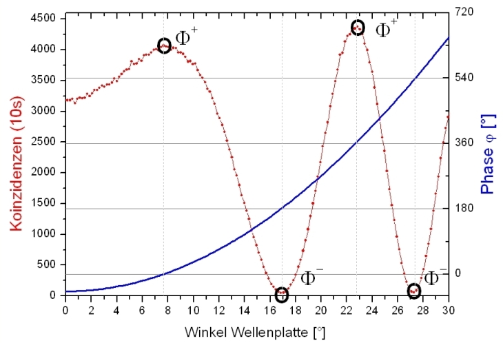

Verschränkung Kapitel C:
Was sind die vier
Bell-Zustände?
Der Zustand von zwei verschränkten Quanten ist nach Formel 1 vom Verhältnis a, b und von der Phase φ abhängig. Insgesamt gibt es vier Zustände, die maximal verschränkt sind. Diese vier Zustände werden nach dem Entdecker der Lokalitäts-Ungleichung (J. S. Bell 1928-1990) als Bell-Zustände bezeichnet. Auf der folgenden Seite wird zunächst die Veränderung des Verhältnisses a, b und der Phase φ disktuiert. Im interaktiven Experiment können die vier Bell Zustände eingestellt und gemessen werden.

Veränderung des Verschränkungsgrades:
Bei der Typ I - Verschränkungsquelle [Kwi99] kann im Gegensatz zur häufig verwendeten Typ II - Verschränkungsquelle [Kwi95] der Verschränkungsgrad verändert werden. Dies geschieht über die Parameter a und b in Formel 1. Mit der Typ I - Quelle können somit nicht maximal verschränkte Zustände erzeugt werden. Diese nicht maximal verschränkten Zustände werden z. B. zur Widerlegung der Lokalitätsbedingung nach Hardy (Kapitel_D) oder zur genaueren Zustandstomographie [Jam01] benötigt. Die Typ I -Quelle besteht aus zwei Kristallen, deren parametrische Fluoreszenz von der Polarisation des Laserlichts (405nm) abhängt (Kapitel_B). Die Veränderung der Parameter a und b erfolgt über die Polarisation des Laserlichts. Die Parameter müssen dabei die Normierung a²+b²=1 erfüllen. Die Normierungsbedingung ist durch a=Cos(φ) und b=Sin(φ) erfüllt. Bei der Polarisation von φ=0° (parallel) sind die Paramter a=1 und b=0. Bei der Polarisation von φ=90° (senkrecht) sind die Parameter a=0 und b=1. Bei der Polarisation von φ =45° sind beide Parameter gleich: a=b=Wurzel(1/2), wobei die Verschränkung maximal ist.
Veränderung der Phase:
Die Phase φ in Formel 1 muss beliebig einstellbar sein. Dies kann durch Einbringung doppelbrechender Materialien (z. B. Quarz) vor dem Kristall (Formel 2) oder hinter dem Kristall im Zweig von Alice oder Bob (Formel 3) erfolgen.
Um die Phase kontinuierlich zu ändern gibt es verschiedene Möglichkeiten. Eine einfache und günstige Möglichkeit ist eine Zero-Order λ/4 Platte, die um ihre eigene optische Achse gedreht wird. Die Phase für das Licht ist dabei von der Drehung der λ/4 Platte abhängig [Hal88]. Für den Zusammenhang zwichen Phase und Verschränkungszustand wurden die Koinzidenzen zwischen Alice Transmittiert und Bob Transmittiert in Abhängigkeit der Kristalldrehung gemessen (Abb. 1). Deutlich ist zu erkennen, dass immer nach 180° induzierter Phase ein Maximum in der Koinzidenzrate vorliegt. Die Messwinkel bei Alice und Bob waren auf 45° eingestellt. Eine zur y-Achse symmetrische Kurve ergibt sich für die Drehung der Wellenplatte von 0 bis -30°.

Abb. 1: Zusammenhang zwischen induzierter Phase φ (blau) und Messung
der Koinzidenzen (rot) zwischen Alice transmittiert und Bob transmittiert
Die vier Bell-Zustände:
Die vier maximal verschränkten Bell-Zustände lauten folgendermaßen:
Die Parameter a und b wurden bei den vier Bell-Zuständen so gewählt, dass die Verschränkung maximal ist. Dies entspricht einer Polarisation des 405nm-Lasers von φ=45°. Die Phase wird zwischen B1 und B2 (Zustände Φ) und zwischen B3 und B4 (Zustände Ψ) um jeweils 180° verändert. Bei den Zuständen B1 und B2 ist die Polarisation der Photonen bei Alice und Bob immer gleich. Bei den Zuständen B3 und B4 ist die Polarisation der Photonen bei Alice und Bob jeweils senkrecht zueinander. Bei unserer Verschränkungsquelle vom Typ I sind immer beide Photonen parallel zueinander polarisiert (Kapitel_B). Um die Zustände B3 und B4 zu erzeugen muss in einen Zweig bei Alice oder Bob eine λ/2 Platte eingebaut werden, die die Polarisation des einen Photons um 90° dreht.
Abb. 2 links: Mechanisches Element* zum präzisen Einstellen zweier Positionen für die Phase φ
Abb. 2 rechts: Mechanisches Element* zum Einstellen der Zustände Φ (0°) und Ψ (90°)
Im folgenden interaktiven Experiment können die vier Bell-Zustände über die Phase φ (Variation +,-) und über eine λ/2 Platte (Variation Φ, Ψ) beliebig eingestellt werden.
Die Phase wird hierbei über ein mechanisches Element (Abb. 2 links) eingestellt, das in exakt zwei Positionen (Winkel 17° für Zustand Φ- und Winkel -22,8° für Zustand Φ+) arretiert. Für die Drehung dieses mechanischen Elementes können im interaktiven Experiment die beiden grauen Taster vor dem Kristall genutzt werden.
Die Zustände Φ und Ψ können ebenfalls über ein mechanisches Element eingestellt werden, dass in den Richtungen 0° und 45° (Polarisation: 90°) arrettiert (Abb. 2 rechts). Im interaktiven Experiment können hierfür die beiden grauen Taster neben der λ/2-Platte im Zweig von Alice benutzt werden.
Bei jedem Bell-Zustand wird über die Koinzidenz das Gesetz von Malus für verschränkte Photonen vermessen. Für die Interferenzkurve steht eine zusätzliche λ/2-Platte im Zweig von Alice mit der Einstellung α=45°. Die λ/2-Platte bei Bob misst automatisch über einen Schrittmotor den Winkelbereich von 0-360°. Für die Aufnahme der Daten für das Gesetz von Malus werden nur die beiden Detektoren Alice transmittiert und Bob transmittiert benötigt. Der reflektierte Strahl am polarisierenden Strahlteiler wird an der schwarzen Platten im Strahlengang absorbiert. Welche Bell-Zustände können anhand der Interferenzkurve unterschieden werden?
Beobachtung und Erklärung:
Bei jedem Bell-Zustand ist wird das Gesetz von Malus für verschränkte Zustände bestätigt (Visibility V=98%). Anhand der Kurven kann nur unterschieden werden, ob Zustände mit der Phase + oder - aufgenommen wurden. Die Zustände Φ und Ψ können anhand der Interferenzkurve nicht unterschieden werden.
*) Die mechanischen Elemente wurden in den Werkstätten des physikalischen Instituts der Univsersität Erlangen-Nürnberg entwickelt und gefertigt.
Originaldaten aus dem Experiment: Bell-Zustände
Zum Kapitel D: Kann die Nichtlokalität bewiesen werden? [klick]
Zurück zur Übersicht [klick]
Autor: P. Bronner, Mai 2008